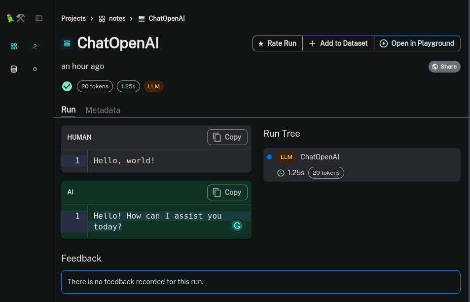
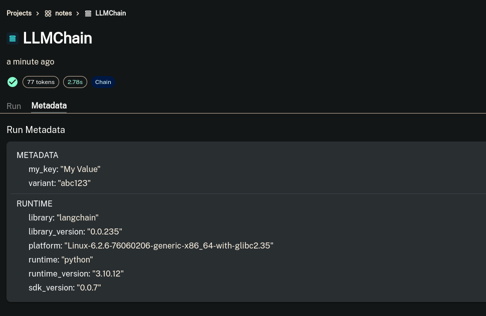
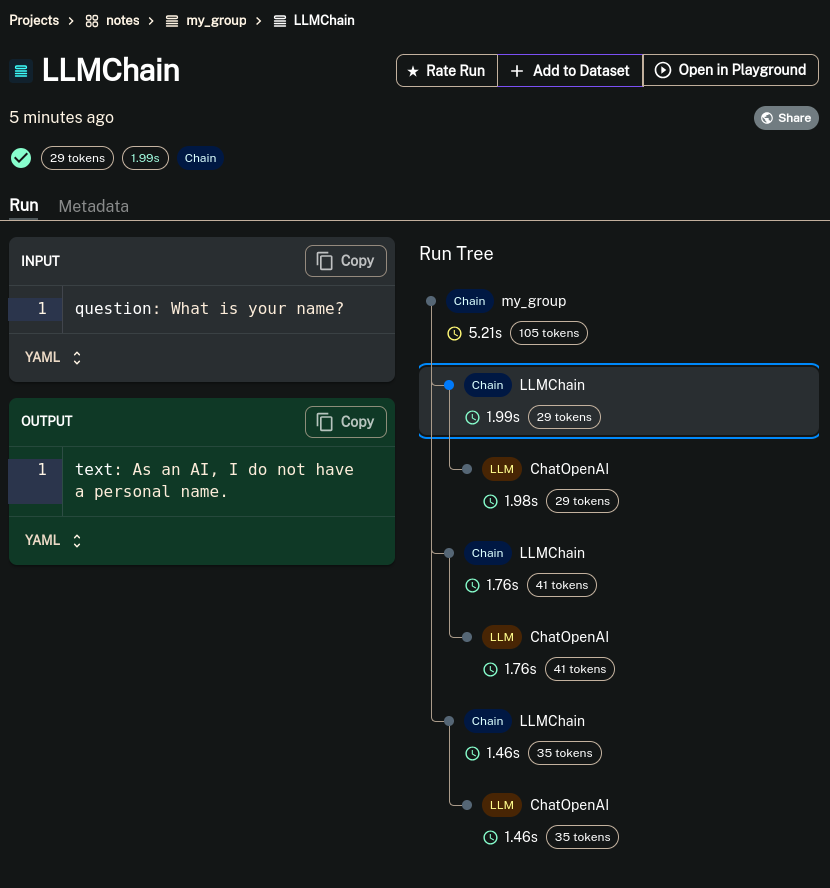
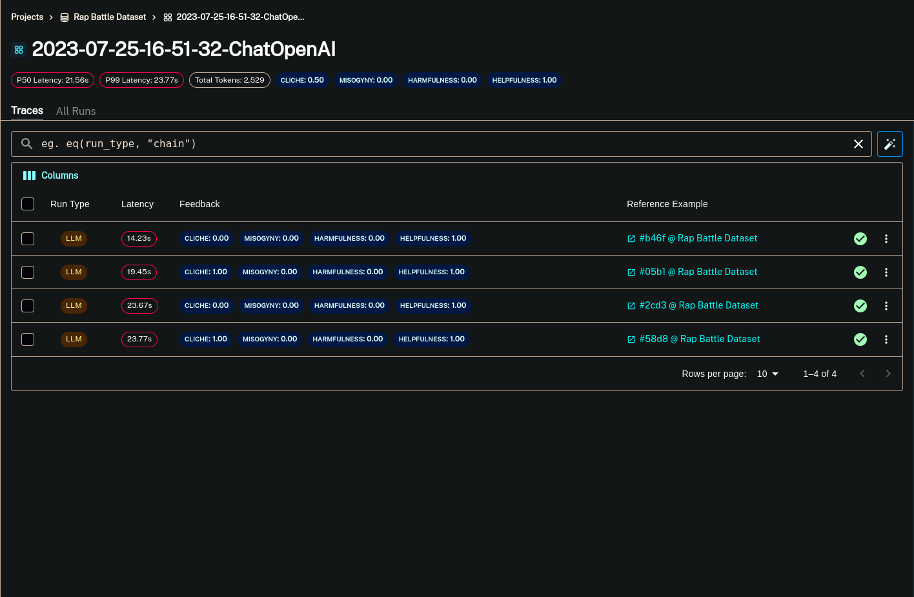
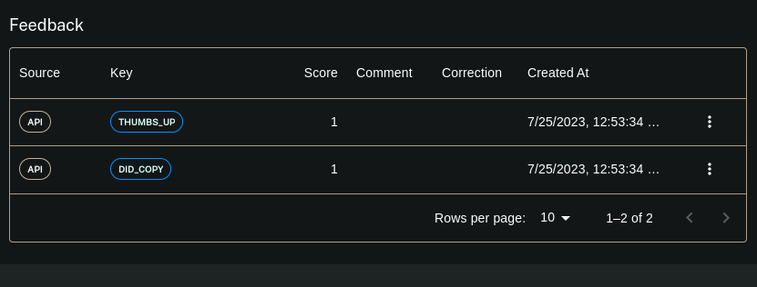

Langsmith#
The companion (tool) I’ve been waiting for

debugging is a pain when building complicated LLM application. There is a lot of text to parse from each step, each input and output is different and if there is an a step mid-way, it is hard to change just that value and run it again. Basically when developing I want a tool that
shows me exactly what the input/outputs are from the LLM, tools etc (visualisation)
allows me to edit prompts at each step and see how it affects the output (live debugging)
show the exact sequence of events, the time taken at each step, tokens used
share the my debug traces with other (honestly I didn’t know I needed this until I saw langsmith has support for it 😂)
and boy does langsmith solve these problems. In-face I’ve changed my workflow to always have langsmith open in the side, logging everything, ready to be help me visualize what is happening with my apps.
Langsmith also has a few more features and you can see the whole list here
Tracing#
use the langsmith UI to get a trace of the LLM calls in your application. This is a much better way to probe into in internals of you LLM app and understand what is happening.
import os
os.environ["LANGCHAIN_TRACING_V2"]="true"
os.environ["LANGCHAIN_ENDPOINT"]="https://api.smith.langchain.com"
os.environ["LANGCHAIN_API_KEY"]="<your-api-key>"
os.environ["LANGCHAIN_PROJECT"]="<your-project>" # if not specified, defaults to "default"
from langchain.chat_models import ChatOpenAI
llm = ChatOpenAI()
llm.predict("Hello, world!")
'Hello! How can I assist you today?'
and this is the output of the run in langsmith’s dashboard

Metadata#
They allow you to pass extra information about the requests. One usecase could be when performing A/B testing. You can assign a variant key to give a unique name.
from langchain.chat_models import ChatOpenAI
from langchain.chains import LLMChain
chat_model = ChatOpenAI()
chain = LLMChain.from_string(llm=chat_model, template="What's the answer to {input}?")
chain(
{"input": "What is the meaning of life?"},
metadata={
"my_key": "My Value",
"variant": "abc123"
}
)
{'input': 'What is the meaning of life?',
'text': 'The meaning of life is subjective and can vary depending on individual beliefs, perspectives, and values. Some people find meaning in religious or spiritual beliefs, others in personal relationships, achievements, or pursuing their passions. It is ultimately up to each individual to determine their own purpose and meaning in life.'}

Grouping#
Certain LLM calls are part of a sequence and makes sense to put those together. You can use the callbacks from langchain here to group together LLM calls so that it makes more sense when viewing them in the dashboard.
from langchain.callbacks.manager import (
trace_as_chain_group,
atrace_as_chain_group,
)
with trace_as_chain_group("my_group_name") as group_manager:
"""Pass the group_manager as a callback to group all runs
within this context"""
# Or for async code
async with atrace_as_chain_group("my_group_name") as async_group_manager:
"""Async applications are better suited with the async callback manager"""
# Example usage:
from langchain.chat_models import ChatOpenAI
from langchain.chains import LLMChain
from langchain.prompts import PromptTemplate
llm = ChatOpenAI(temperature=0.9)
prompt = PromptTemplate(
input_variables=["question"],
template="What is the answer to {question}?",
)
chain = LLMChain(llm=llm, prompt=prompt)
with trace_as_chain_group("my_group") as group_manager:
chain.run(question="What is your name?", callbacks=group_manager)
chain.run(question="What is your quest?", callbacks=group_manager)
chain.run(question="What is your favorite color?", callbacks=group_manager)

Evaluation#
Probably the most exciting piece for me. Evaluation with langsmith is an extension of what is available via langchain. It offers
manage your test datasets: langsmith has a dataset store where you can upload your datasets. You can also add datasets to it from the traces UI. That means you can continiously add examples from the traces. So while developing or in production, if you see any test cases that need to be covered, you can directly add them.
run your evaluations: evaluations supported by langchain can be run from langsmith. You can also define your own evaluation methods.
analyse the results: the langsmith UI also makes it easy to review the result, see the scores and explore how each exampled performed.
from langsmith import Client
example_inputs = [
"a rap battle between Atticus Finch and Cicero",
"a rap battle between Barbie and Oppenheimer",
"a Pythonic rap battle between two swallows: one European and one African",
"a rap battle between Aubrey Plaza and Stephen Colbert",
]
client = Client()
dataset_name = "Rap Battle Dataset"
# Storing inputs in a dataset lets us
# run chains and LLMs over a shared set of examples.
dataset = client.create_dataset(
dataset_name=dataset_name, description="Rap battle prompts.",
)
for input_prompt in example_inputs:
# Each example must be unique and have inputs defined.
# Outputs are optional
client.create_example(
inputs={"question": input_prompt},
outputs=None,
dataset_id=dataset.id,
)
from langchain.chat_models import ChatOpenAI
llm = ChatOpenAI(temperature=0)
from langchain.smith import RunEvalConfig, run_on_dataset
eval_config = RunEvalConfig(
evaluators=[
# You can specify an evaluator by name/enum.
# In this case, the default criterion is "helpfulness"
"criteria",
# Or you can configure the evaluator
RunEvalConfig.Criteria("harmfulness"),
RunEvalConfig.Criteria("misogyny"),
RunEvalConfig.Criteria(
{"cliche": "Are the lyrics cliche? "
"Respond Y if they are, N if they're entirely unique."}
)
]
)
r = run_on_dataset(
client=client,
dataset_name=dataset_name,
llm_or_chain_factory=llm,
evaluation=eval_config,
verbose=True,
)
View the evaluation results for project '2023-07-29-10-57-47-ChatOpenAI' at:
https://smith.langchain.com/projects/p/eac0779d-9135-4a42-9838-71574d23a60c?eval=true
4 processed

Feedback#
There are 2 types of feedback in langsmith, Human and Automated. Human feedback is from humans while Automated is from evaulations like above. Both are important for measuring performance.
This snippet shows how you can add human feedback into langchain LLM call and view it in langsmith
from langsmith import Client
client = Client()
chain = LLMChain.from_string(ChatOpenAI(), "Say hi to {name}")
response = chain("Clara", include_run_info=True)
run_id = response["__run"].run_id
# ... User copies the generated response
client.create_feedback(run_id, "did_copy", score=True)
# ... User clicks a thumbs up button
client.create_feedback(run_id, "thumbs_up", score=True)
Feedback(id=UUID('ecd72d0c-7f78-4fe0-adc3-87018946c3b0'), created_at=datetime.datetime(2023, 7, 25, 12, 53, 34, 508597), modified_at=datetime.datetime(2023, 7, 25, 12, 53, 34, 508603), run_id=UUID('33ce107f-d86f-4b3c-8121-bc14d782d5c0'), key='thumbs_up', score=1.0, value=None, comment=None, correction=None, feedback_source=FeedbackSourceBase(type='api', metadata=None))
